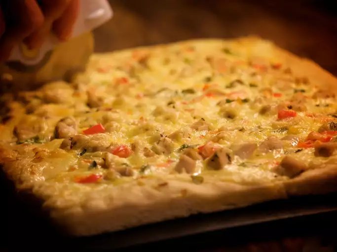

Chicken Alfredo Pizza Recipe

Description
This Alfredo pizza recipe combines two of my favorites: chicken and pizza. My husband, who isn't fond of chicken, even likes this!
Ingredients:
- 2 boneless chicken breast halves, roasted
- ¼ teaspoon dried rosemary
- ¼ teaspoon dried thyme
- ¼ teaspoon poultry seasoning
- ¼ teaspoon garlic powder
- ¼ teaspoon salt
Steps:
- Make garlic butter: Melt butter in a small saucepan over medium heat. Blend in garlic, rosemary, and salt. Cook and stir until garlic is tender but not browned. Remove from heat, cover, and set aside.
- Make sauce: Melt butter in a small saucepan over medium heat. Blend flour, salt, and pepper into melted butter. Stir in milk and Romano cheese. Simmer, stirring constantly, until thickened. Remove from heat, cover, and set aside.
- Make dough: Stir yeast into warm water in a small bowl until yeast is dissolved. Allow to rest until yeast foams, about 5 minutes. Mix together oil, sugar, salt, rosemary, and garlic powder in a large bowl. Stir in yeast mixture, then mix in flour gradually. Gather into a loose ball and knead until a smooth ball forms. Cover with a dish towel and let rest for 30 minutes.
- Preheat the oven to 400 degrees F (200 degrees C).
- Prepare chicken: Season roasted chicken with rosemary, thyme, poultry seasoning, garlic powder, and salt. Chop or shred chicken and set aside.
- Asemble pizza: Spread dough out onto a pizza pan. Brush on garlic butter, covering entire crust. Spread sauce on top, leaving crust edges. Cover with chicken, turning to coat with sauce.
- Bake in the preheated oven until the bottom crust is lightly browned, about 20 minutes. Allow pizza to rest for 2 to 3 minutes before slicing.